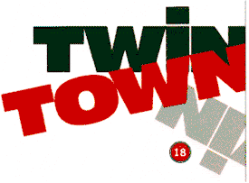
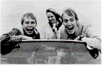
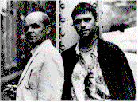

Contents | Features | Reviews | Books | Archives | Store |
 |
|
| Movie Credits | Buy It! |
Twin Town
Review by Eddie Cockrell
Posted 30 May 1997
|  | Directed by Kevin Allen Starring Llyr Evans, Rhys Ifans, Screenplay by Kevin Allen, Paul Durden |
There is an apprehension among specialty distributors in the United States regarding the ability of foreign films in English to attract American audiences. Their dilemma is twofold: first, that the subject matter will be of no interest (especially outside of the crucial urban markets); and second, that however understandable the English is, the combination of regional slang and speed of delivery will render the film virtually unintelligible (the number of English-language films subtitled in English being infinitesimally small). This is one of many reasons why it was so heartening to see Mike Leigh's Secrets and Lies playing alongside Sylvester Stallone vehicles in suburban shopping malls late last year — and actually doing business (the Oscar nominations helped, of course).
Arguably, this nervousness results in some good filmmakers and their work receiving short shrift stateside, including Ken Loach (Raining Stones, Riff-Raff), Terence Davies (The Long Day Closes), Leigh (until recently) and Danny Boyle (Shallow Grave, Trainspotting). Wait a moment—Trainspotting, short shrift? What about the hype, you say, the reviews? Not taking any chances, the film's American distributor had some of the dialogue re-recorded and edited out some of the naughtier bits (all of which has been restored to the laserdisc release, apparently).
All this is preamble to the new British film Twin Town (Welsh in all but name and official country of origin), which is possessed of the same cheerful calculation and original, undeniable energy of Trainspotting, without the explicit drug usage and unrelentingly grungy milieu. Not surprisingly, the two films share a strong link: Executive Producers Andrew Macdonald and Danny Boyle produced and directed Trainspotting, respectively, while Twin Town producer Peter McAleese remembers working with Macdonald in 1989 on the low-budget British film Wild Flowers — where Macdonald was a production runner. To complete the lineage, Twin Town director Kevin Allen is making his feature debut after graduating from soccer-themed documentaries and acting (he's been in TV's Absolutely Fabulous and Rowan Atkinson's The Thin Blue Line, also on film as the hotel manager at the end of Trainspotting and the TV presenter in Twin Town).
To the strains of Petula Clark's 1960s tune, The Other Man's Grass is Always Greener, (an instant tipoff to the culture-based ironies to come), viewers are introduced to Swansea, the picturesque but placid southern Wales seaside town that Dylan Thomas once called an "ugly, lovely town" and one character amends to "a pretty, shitty city." The labyrinthine but logical plot comes to the fore after a plethora of local n'er-do-wells have been introduced. Fatty Lewis (Huw Ceredig) is a handyman from the profoundly wrong side of the tracks whose tumble off a roof is blamed on local kingpin and contractor Bryn Cartwright (William Thomas), who promptly refuses to pay compensation. Without losing its lunatic sense of humor, Twin Town very soon turns dark indeed, as reprisals from different members of each clan escalate in direct proportion to their eccentricities, climaxing with a waterfront confrontation that proves dramatically satisfying, if not morally redemptive. Acting as the malicious, amoral Greek chorus to the proceedings are the psychopathic, usually wasted Lewis "twins" Julian (Llyr Evans) and Jeremy (Rhys Ifans), whose talent for conceiving and executing vicious, imaginative and ultimately deadly retribution on anyone named Cartwright (as well as a few who aren't) is matched only by their seemingly supernatural ability to predict what everyone else in Swansea is going to do and plan their next move before the offense has been carried out. Also involved in the feud are local plainclothes cops Greyo (Dorein Thomas) and Terry (Dougray Scott), who prove in their corruption and vindictiveness to be thinnest of blue lines between the warring clans.
With ancillary character names like Hunky, Chunky and Dodgy (not to mention Mr. and Mrs. Mort), Twin Town often plays like some demented Dickens novel. The acting is, as might be expected, of the bulging-eyed, raised-voice, broad-gestured variety, owing to the caricaturish nature of the entire proceedings (it is unclear if any of the thick Welsh accents have been overdubbed by stateside distributor Gramercy Pictures). While much of the company apparently worked together on a popular Welsh soap opera (Pobol Y Cwym, if you must know), only Dougray Scott as the doomed detective Terry even approximates a realistic approach, and the actor has now graduated to playing poet Robert Graves in Gillies Mackinnon's upcoming Regeneration. "I understand these characters," he told Moving Pictures' Geoffrey Macnab at this year's Berlin film festival, "their putrid disgust for this terrible place. And that desperation to get away." This seems to be a direct link to the "Angry Young Man" movement of the early 1960s, in which such disaffected young men as Albert Finney, Richard Harris and Tom Courtenay brooded their way through a depressed, black and white Britain (in fact, hard-edged social commentary has always been a distinguished hallmark of films from the entire United Kingdom).
While the sports/drugs/cultural hostility metaphors throughout Twin Town have distinct parallels to Trainspotting, the new project was developed independently while director Allen was shooting a documentary on the Glaswegian ice cream wars (the same real-life event that inspired Bill Forsyth to write the sublime Comfort and Joy). Finding a kindred spirit in anarchic social criticism, Macdonald and Boyle agreed to shepherd the low-budget ($2 milion) picture through production and release. "It's a multiplex film but we haven't toned down any aspect to make it more friendly for foreign audiences," producer McAleese said in Berlin (where the film was the subject of the festival's oddest yet trendiest party—in a parking garage). Allen's goal was perhaps more direct: "I wanted to lay a few Welsh stereotypes to rest," he said at the same junket, "they're a puke-inducing disgrace—an insult to youth culture."
His strategy had many British critics seething over the frantic and morally vapid panache of the proceedings ("A film depicting mindless violence by two young thugs," fumed one paper in London, where the film opened in mid-April). Ironically, not only is this phrase a vaguely accurate description of Trainspotting as well, but it fails to take into account the fantastic nature of the proceedings in both films (Twin Town's production company is called, appropriately enough, Figment Films). But by eschewing the iconographic resonance and forced trendiness of Trainspotting, Twin Town emerges as an original vision in which yet another untrampled corner of the world (Rugby! Anthony Hopkins! Sheep! Shirley Bassey! Coal! Tom Jones!) goes mad with greed, revenge, ignorance, addiction and lust. As such it may be doomed to perpetual misunderstanding, but as a cultural bellwether it feels just right (anybody remember Billy Wilder's career-ending Kiss Me, Stupid, which was reviled in its day but may be the most frighteningly acute comedy he ever made as well as one of the best films of the 1960s? No? Rent or buy it immediately). No wonder the British press couldn't stand Twin Town—it may be spot on.
Seen in this light, Twin Town not only surpasses the shallow theatrics of its predecessor (most drug movies screw it up by mistaking cheap thrills for veracity, anyway), but resembles nothing so much as the Coen Brothers' Raising Arizona and Fargo in its withering, surreal criticism of place and time (remember, the Coens grew up within shouting distance of the North Dakota, and Allen was born in some place called Gosport—which is, apparently, in Wales). Ultimately, then, Twin Town, with its emphasis on the unmerciful skewering of family and territory, class divisions and that old standby, revenge, should overcome its cultural obstacles and do just fine in territories where those traits exist—and need constant tweaking by filmmakers unafraid to surf the trends in pursuit of the universal comic curl.
Contents | Features | Reviews | Books | Archives | Store
Copyright © 1999 by Nitrate Productions, Inc. All Rights Reserved.